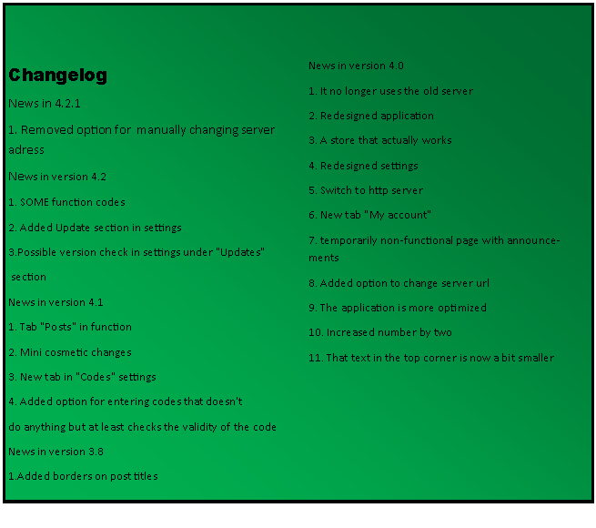
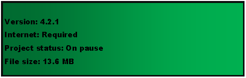

www.renatogr.cf Desktop


![Tekstualni okvir: Description
On www.renatogr.cf Desktop you can read what’s new in www.renatogr.cf, Search for codes around the web that you can enter into the app and unlock special apps and tweaks. If you want to take a look to some of my other apps go to tab “Apps” then select app you wish to download and click download over browser. If you want to know what’s new in app but don’t want to go here to see you can go to “Setting” tab and click the button “What’s new”. In later updates, you will be able to update the application over ‘Update” button in settings. Implementation of www.renatogr.cf Video should come in next version (4.3). And also language selection is also on my to do list.](index_datoteke/image301.png)